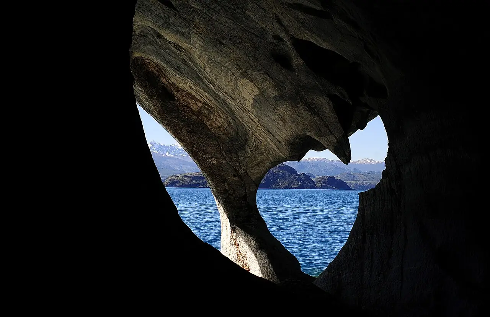

Capillas de Mármol
Aysén, Chili · kayak

Grottes de marbre sculptées par l’eau sur la rive du lac General Carrera, près de Puerto Río Tranquilo. On les explore en bateau ou en kayak quand le lac est calme, dans une eau turquoise.
- Lieu
- Aysén, Chili
- Niveau
- Intermédiaire
- Activités
- kayak
- Type d'eau
- lake
- Coordonnées
- -46.66, -72.63 (position approximative du secteur)
Dangers à connaître
- Vent et vagues soudains sur le lac.
- Eau glaciaire : combinaison et gilet indispensables.
Le conseil d'Ocean Buddy
Pars avec un guide local tôt le matin : le vent se lève vite sur ce très grand lac.
Ouvrir dans Ocean Buddy Télécharger sur l'App Store
Source : Fiche Ocean Buddy · septembre 2026 · à vérifier localement.